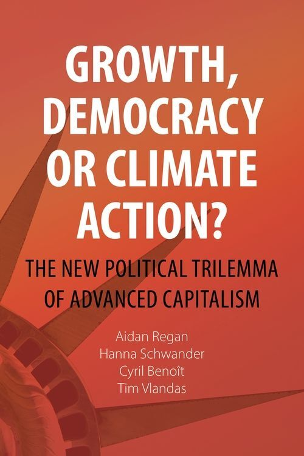

The New Political Trilemma of Advanced Capitalism
Governments promise all three at once — but that promise no longer holds. Growth, Democracy, or Climate Action? reveals the hard trade-offs now reshaping advanced capitalism, and maps the political paths still open before the window closes. We outline three scenarios — a market-led Liberal Status Quo, a state-led Big Green State, and radical Degrowth — and show why none has yet resolved the trade-off. What it will take instead is a rebuilt, capable state and a broad coalition of working- and middle-class voters who see the transition as a route to good jobs, not just carbon cuts.

Climate change is not only an ecological crisis but a crisis of political economy. Decarbonizing at the required speed demands state-led economic transformation at a scale liberal democracies have not attempted since the mid-twentieth century.
Growth has legitimized democratic capitalism for decades, but its gains now concentrate at the top while wages stagnate — fuelling backlash. Decarbonizing fast enough collides head-on with that growth promise.
The core claim: growth, democratic legitimacy and effective climate action cannot all be maximized together. Something has to give.
Left to liberal markets, the green transition is partial, uneven and unjust. Renewables are added on top of fossil fuels, not in place of them.
Carbon inequality is the crux: the top 10% emit nearly half of all emissions; the bottom 50% just 7%. Asking ordinary voters to pay while elites pollute freely is politically untenable.
Under the status quo, growth and democracy win — at climate's expense. Every diluted target and reversed regulation is the trilemma in action.
Could a state freed from electoral pressure decarbonize at the needed pace? China is the prototype: ~80% of global solar production, dominant in batteries and EVs, ~$675bn invested in clean energy in one year.
Its "developmental environmentalism" blends planning with markets, steering finance toward strategic green sectors — achieving climate action and growth without democracy.
But the model carries authoritarianism, overcapacity and no guarantee of a just transition. Should democracies want this — even if it works?
Degrowth proposes planned contraction, shorter working weeks, redistribution and well-being indicators over GDP — and is democratically deliberative by design.
The obstacle isn't conceptual but political: no party in a competitive democracy can campaign on shrinking the economy. Growth is the currency of political legitimacy.
So degrowth secures climate action and democratic deliberation in theory, while sacrificing growth — and stays trapped by the very political economy it seeks to transcend.
Inequality corrodes climate politics from within: a vicious circle where inaction deepens inequality and inequality blocks reform.
Distributive justice is the terrain on which the trilemma will be fought. Climate action grafted onto an unequal order loses public support fast.
The far right has grasped this faster than the left — weaponizing climate grievance by casting the "green agenda" as an elite project.
The lesson from China isn't to become autocratic — it's to rebuild the democratic planning capacity neoliberalism dismantled. The real choice is weak vs. effective states.
Climate action must be a class project: a rural–urban, working- and middle-class coalition, rooted in social protection and public investment, with the costs falling on the rich.
The trilemma cannot be solved — that window has closed. It will be fought, not managed. At stake is the credibility of democracy itself.
This page presents the analytical core of the book. It maps the trade-offs between growth, democracy, and climate action that every advanced democracy now has to navigate. Explore the framework at the heart of the book: three strategies, three different trade-offs, and no escape from the choice between them.
Each strategy secures the two goals it sits between — and sacrifices the third. There is no point in the middle. Click an edge of the triangle, or a strategy below, to open it.
Left to liberal markets, the green transition is partial, uneven and unjust. Renewables are added on top of fossil fuels, not in place of them. Carbon inequality is the crux: the top 10% emit nearly half of all emissions; the bottom 50% just 7%. Asking ordinary voters to pay while elites pollute freely is politically untenable. Under the status quo, growth and democracy win — at climate's expense. Every diluted target and reversed regulation is the trilemma in action.
↳ This is where almost every Western democracy sits today.
Could a state freed from electoral pressure decarbonize at the needed pace? China is the prototype: ~80% of global solar production, dominant in batteries and EVs, ~$675bn invested in clean energy in one year. Its "developmental environmentalism" blends planning with markets, steering finance toward strategic green sectors — achieving climate action and growth without democracy. But the model carries authoritarianism, overcapacity and no guarantee of a just transition. Should democracies want this — even if it works?
↳ Already emerging in China, Vietnam, Singapore — and perhaps the Gulf petrostates.
Degrowth proposes planned contraction, shorter working weeks, redistribution and well-being indicators over GDP — and is democratically deliberative by design. The obstacle isn't conceptual but political: no party in a competitive democracy can campaign on shrinking the economy. Growth is the currency of political legitimacy. So degrowth secures climate action and democratic deliberation in theory, while sacrificing growth — and stays trapped by the very political economy it seeks to transcend.
↳ The most coherent, least plausible route — until it is suddenly the only one left.
Here you can find a glimpse of some of the various empirical evidences we present in the book to underlie our argument.
Book Figure 4.5 — Life satisfaction vs. CO₂ emissions per capita, 2024
Life satisfaction and per capita emissions remain closely correlated across countries — higher emissions, higher reported well-being, even if the relationship flattens at the top. This illustrates the book's central argument against degrowth as a political strategy, whatever its scientific merits. As we put it in the book: "A democracy that relies on growth for legitimacy cannot easily survive without it." Asking voters to accept less isn't just unpopular — it's a structural contradiction for any government whose legitimacy depends on rising living standards.
Source: Our World in Data
Book Figure 2.3 — Consumption-based CO₂ emissions per capita vs. GDP per capita
Across high-income countries, consumption-based emissions per capita still rise and fall with GDP per capita. This is exactly the pattern the book argues the Liberal Status Quo cannot escape: as long as prosperity is measured by GDP, decarbonizing what people actually consume — not just what their country produces — remains unsolved.
Source: Our World in Data
Book Figure 4.1 — CO₂ and GDP growth in 21 advanced capitalist democracies since 1960
Since 1960, emissions in advanced capitalist democracies have grown more slowly than GDP — the textbook signal of "decoupling," and the evidence usually cited for green growth optimism. Read next to Figure 1, the figure shows that this decoupling is largely a production-side story — once emissions embedded in imported goods are counted the link between growth and emissions barely loosens. The two figures together make the book's "decoupling paradox" argument: progress that looks real from one angle and stalls from another.
Source: Own illustration based on data from Our World in Data
Podcasts, media coverage, and academic reviews of the book.